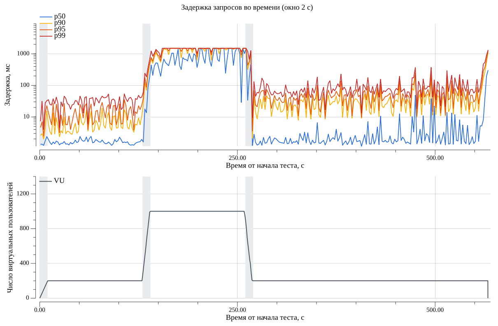
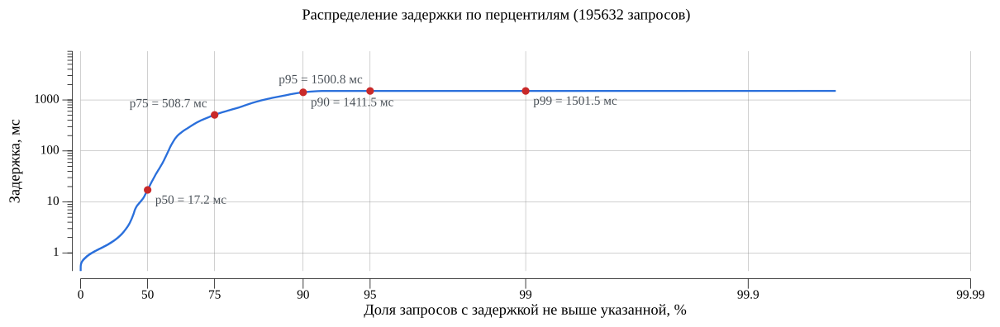
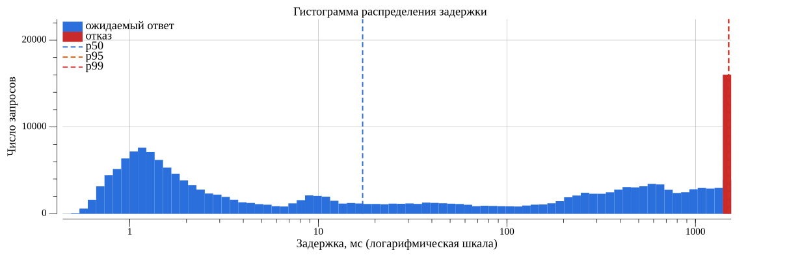
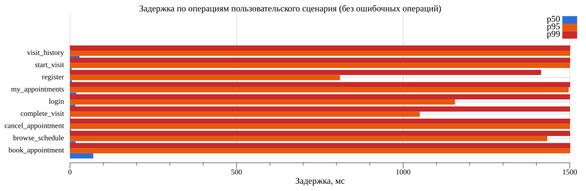
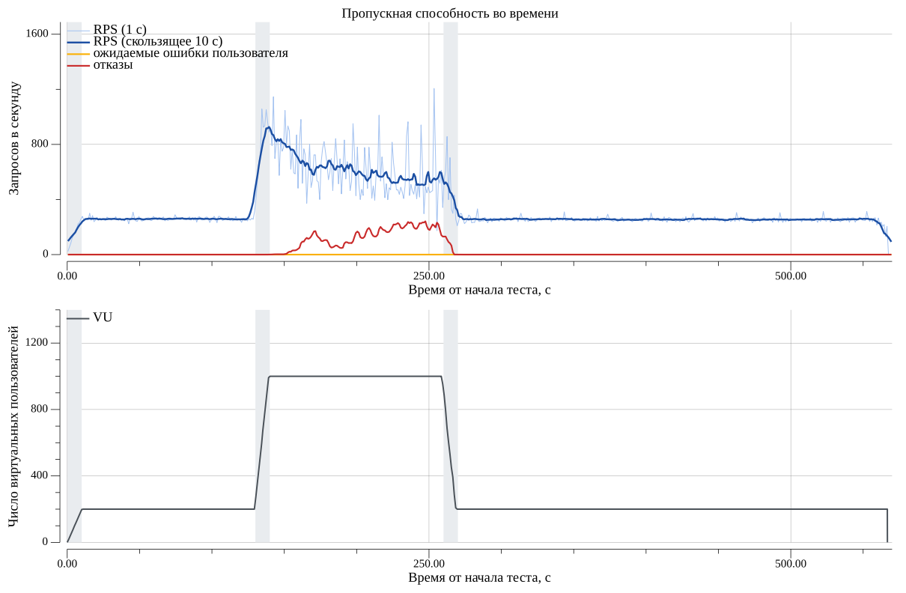
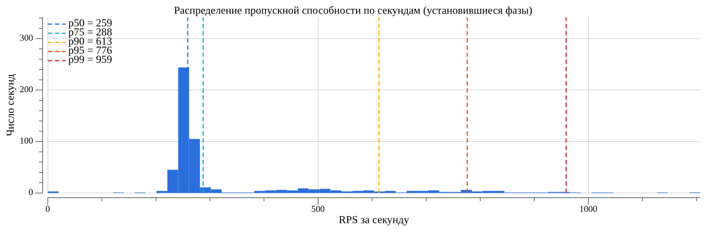
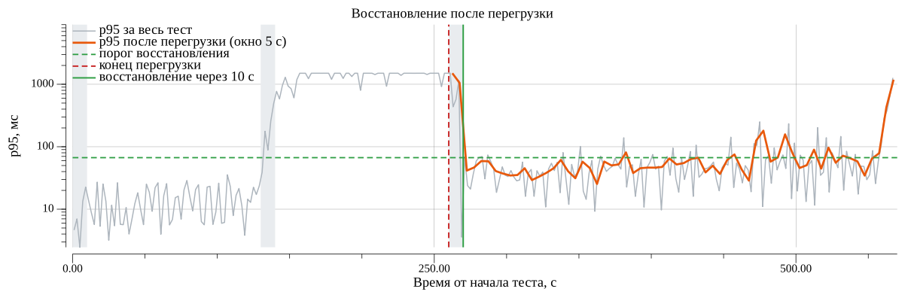
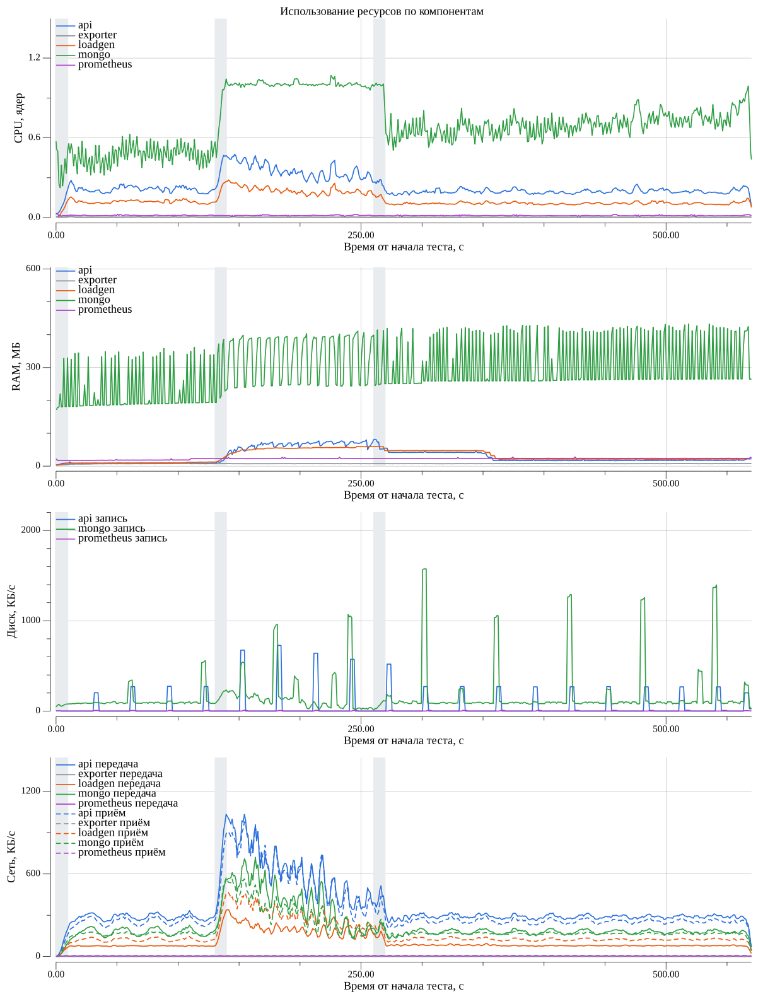

Перегрузка и восстановление
Запросов195632
RPS среднее / медиана343 / 259
p50 / p95 задержки17.2 / 1501 мс
p99 задержки1501 мс
Отказы8.19%
Ошибочные операции0.00%
Базовая нагрузка: p95 16.8 мс, 260 RPS. Перегрузка: p95 1501 мс, отказы 20.5%, 621 RPS. Восстановление после снятия перегрузки за 10.0 с.
Задержка
| Задержка, мс | count | min | mean | p50 | p75 | p90 | p95 | p99 | max |
|---|---|---|---|---|---|---|---|---|---|
| Все запросы | 195632 | 0.44 | 333 | 17.2 | 509 | 1412 | 1501 | 1501 | 1532 |
| Корректные операции | 195632 | 0.44 | 333 | 17.2 | 509 | 1412 | 1501 | 1501 | 1532 |
| Ошибочные операции | 0 | — | — | — | — | — | — | — | — |



Операции пользовательского сценария
| Операция | count | min | mean | p50 | p75 | p90 | p95 | p99 | max | Отказы | Ошибочные |
|---|---|---|---|---|---|---|---|---|---|---|---|
| book_appointment | 30132 | 1.00 | 507 | 70.1 | 1150 | 1501 | 1501 | 1502 | 1517 | 19.35% | 0.00% |
| browse_schedule | 30245 | 0.56 | 261 | 17.1 | 373 | 932 | 1433 | 1501 | 1507 | 3.11% | 0.00% |
| cancel_appointment | 7262 | 0.78 | 271 | 3.80 | 440 | 1064 | 1500 | 1501 | 1508 | 5.43% | 0.00% |
| complete_visit | 14906 | 0.76 | 170 | 2.03 | 83.3 | 684 | 1050 | 1501 | 1503 | 1.50% | 0.00% |
| login | 30354 | 0.44 | 237 | 16.6 | 368 | 722 | 1156 | 1501 | 1506 | 1.53% | 0.00% |
| my_appointments | 29896 | 0.46 | 320 | 19.4 | 460 | 1305 | 1497 | 1501 | 1518 | 4.63% | 0.00% |
| register | 6415 | 0.46 | 181 | 6.25 | 285 | 592 | 810 | 1414 | 1502 | 0.39% | 0.00% |
| start_visit | 16830 | 1.02 | 350 | 4.93 | 675 | 1500 | 1501 | 1501 | 1509 | 11.02% | 0.00% |
| visit_history | 29592 | 0.49 | 458 | 28.7 | 1012 | 1501 | 1501 | 1502 | 1532 | 16.57% | 0.00% |

Пропускная способность
| Показатель | count | min | mean | p50 | p75 | p90 | p95 | p99 | max |
|---|---|---|---|---|---|---|---|---|---|
| RPS за секунду | 570 | 0.00 | 343 | 259 | 303 | 661 | 797 | 991 | 1206 |


Фазы нагрузки
| Участок | VU | RPS ср. | RPS p50 | RPS p5 | p50 мс | p95 мс | p99 мс | Отказы | CPU api | CPU mongo | RAM api, МБ | SLO |
|---|---|---|---|---|---|---|---|---|---|---|---|---|
| разгон | 200 | 149 | 152 | 37.0 | 1.59 | 15.3 | 31.6 | 0.00% | 0.10 | 0.37 | 7.08 | да |
| базовая нагрузка | 200 | 259 | 257 | 241 | 1.59 | 15.1 | 36.5 | 0.00% | 0.21 | 0.47 | 9.13 | да |
| рост | 1000 | 818 | 907 | 473 | 48.5 | 321 | 506 | 0.00% | 0.36 | 0.78 | 15.6 | да |
| перегрузка | 1000 | 621 | 582 | 400 | 695 | 1501 | 1502 | 20.53% | 0.35 | 1.00 | 65.1 | нет |
| спад | 200 | 464 | 415 | 231 | 208 | 1501 | 1502 | 15.49% | 0.26 | 0.98 | 65.2 | нет |
| восстановление | 200 | 252 | 254 | 234 | 1.85 | 62.0 | 171 | 0.00% | 0.20 | 0.70 | 24.5 | да |
Перегрузка и восстановление
| Участок | VU | RPS ср. | RPS p50 | RPS p5 | p50 мс | p95 мс | p99 мс | Отказы | CPU api | CPU mongo | RAM api, МБ | SLO |
|---|---|---|---|---|---|---|---|---|---|---|---|---|
| эталон | 200 | 260 | 258 | 236 | 1.58 | 16.8 | 38.9 | 0.00% | 0.21 | 0.48 | 9.20 | да |
| перегрузка | 1000 | 621 | 582 | 400 | 695 | 1501 | 1502 | 20.53% | 0.35 | 1.00 | 65.1 | нет |
| после | 200 | 244 | 253 | 205 | 2.45 | 105 | 359 | 0.00% | 0.20 | 0.76 | 18.0 | да |

Использование ресурсов
| Компонент | Метрика | min | max | mean | median | p95 |
|---|---|---|---|---|---|---|
| api | CPU, ядер | 0.03 | 0.48 | 0.24 | 0.21 | 0.41 |
| api | Троттлинг CPU, с/с | 0.00 | 0.00 | 0.00 | 0.00 | 0.00 |
| api | Чтение с диска, КБ/с | 0.00 | 0.00 | 0.00 | 0.00 | 0.00 |
| api | Запись на диск, КБ/с | 0.00 | 727 | 47.7 | 0.00 | 271 |
| api | RAM (working set), МБ | 3.95 | 81.7 | 30.1 | 17.6 | 72.6 |
| api | Сеть, приём КБ/с | 1.52 | 978 | 328 | 262 | 759 |
| api | Сеть, передача КБ/с | 1.88 | 1033 | 362 | 295 | 770 |
| api | Процессы и потоки | 7.00 | 16.0 | 9.01 | 9.00 | 10.0 |
| exporter | CPU, ядер | 0.00 | 0.01 | 0.00 | 0.00 | 0.01 |
| exporter | Троттлинг CPU, с/с | 0.00 | 0.00 | 0.00 | 0.00 | 0.00 |
| exporter | Чтение с диска, КБ/с | 0.00 | 0.00 | 0.00 | 0.00 | 0.00 |
| exporter | Запись на диск, КБ/с | 0.00 | 0.00 | 0.00 | 0.00 | 0.00 |
| exporter | RAM (working set), МБ | 2.93 | 7.98 | 7.32 | 7.44 | 7.91 |
| exporter | Сеть, приём КБ/с | 0.48 | 0.54 | 0.48 | 0.48 | 0.50 |
| exporter | Сеть, передача КБ/с | 3.38 | 4.19 | 4.01 | 4.00 | 4.18 |
| exporter | Процессы и потоки | 4.00 | 5.00 | 4.98 | 5.00 | 5.00 |
| loadgen | CPU, ядер | 0.01 | 0.28 | 0.13 | 0.11 | 0.23 |
| loadgen | Троттлинг CPU, с/с | 0.00 | 0.00 | 0.00 | 0.00 | 0.00 |
| loadgen | Чтение с диска, КБ/с | 0.00 | 0.00 | 0.00 | 0.00 | 0.00 |
| loadgen | Запись на диск, КБ/с | 0.00 | 0.00 | 0.00 | 0.00 | 0.00 |
| loadgen | RAM (working set), МБ | 2.75 | 60.5 | 30.1 | 21.6 | 56.8 |
| loadgen | Сеть, приём КБ/с | 4.02 | 464 | 164 | 126 | 364 |
| loadgen | Сеть, передача КБ/с | 3.47 | 340 | 107 | 79.2 | 228 |
| loadgen | Процессы и потоки | 7.00 | 9.00 | 8.67 | 9.00 | 9.00 |
| mongo | CPU, ядер | 0.23 | 1.07 | 0.72 | 0.70 | 1.01 |
| mongo | Троттлинг CPU, с/с | 0.02 | 1.08 | 0.41 | 0.27 | 1.01 |
| mongo | Чтение с диска, КБ/с | 0.00 | 0.00 | 0.00 | 0.00 | 0.00 |
| mongo | Запись на диск, КБ/с | 10.0 | 1575 | 167 | 93.0 | 554 |
| mongo | RAM (working set), МБ | 173 | 433 | 295 | 264 | 421 |
| mongo | Сеть, приём КБ/с | 1.51 | 570 | 199 | 168 | 419 |
| mongo | Сеть, передача КБ/с | 0.74 | 721 | 224 | 184 | 540 |
| mongo | Процессы и потоки | 40.0 | 154 | 117 | 137 | 150 |
| prometheus | CPU, ядер | 0.01 | 0.03 | 0.02 | 0.02 | 0.02 |
| prometheus | Троттлинг CPU, с/с | 0.00 | 0.00 | 0.00 | 0.00 | 0.00 |
| prometheus | Чтение с диска, КБ/с | 0.00 | 0.00 | 0.00 | 0.00 | 0.00 |
| prometheus | Запись на диск, КБ/с | 0.00 | 8.00 | 0.92 | 0.00 | 7.00 |
| prometheus | RAM (working set), МБ | 17.1 | 27.8 | 22.4 | 23.4 | 23.8 |
| prometheus | Сеть, приём КБ/с | 3.51 | 7.05 | 6.52 | 6.72 | 7.03 |
| prometheus | Сеть, передача КБ/с | 0.58 | 1.04 | 0.96 | 0.96 | 1.00 |
| prometheus | Процессы и потоки | 7.00 | 14.0 | 7.93 | 8.00 | 8.00 |

Коды ответов
| Код | Запросов |
|---|---|
| 200 | 133945 |
| 201 | 45665 |
| 500 | 16022 |
Окружение прогона
| Компонент | Логические CPU | Квота CPU | Резерв RAM, МБ | Лимит RAM, МБ | Образ | ID образа |
|---|---|---|---|---|---|---|
| api | 0,1 | 1 | — | 512 | vitaline-lab4-api:20261112-201906-stress-3b7u | 16af504a74d4 |
| exporter | 6,7 | — | — | 64 | vitaline-lab4-exporter:1 | ddc3666118d5 |
| loadgen | 4,5 | — | — | 2048 | vitaline-lab4-loadgen:1 | 8cd130a6110d |
| mongo | 2,3 | 1 | — | 1024 | mongo:7 | 9896df581dfd |
| prometheus | 6,7 | — | — | 768 | prom/prometheus:v3.5.0 | 63805ebb8d2b |